Verkefni 3
Þriðja verkefnið í þessum áfanga var að búa til eitthvað með 3D prentarann PrusaSlicer og skanna eitthvað með 3D skönnunar forriti.
3D prentuninn
Ég vissi ekki nákvæmlega hvað ég vildi búa til í byrjun en ég vissi að ég vildi búa til eitthvað sem ég gæti notað. Þannig að ég fór á hugmyndavefsíðurnar eins og Pinterest og Thangs til þess að fá smá innblástur. Ég endaði með að vilja að gera PS5 fjarstýringastand sem getur haldið tveimur fjarstýringum. Hér fyrir neðan er upprunalega myndin sem ég ákvað að herma eftir
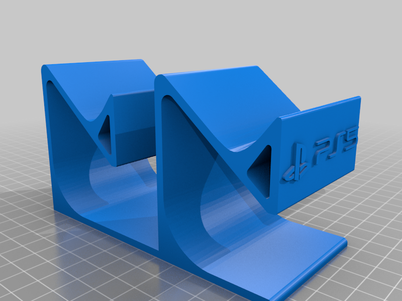Það sem ég gerði síðan var að hlaða niður skjalið af standinum og opnaði það í Solidworks. Næst fann ég sirka út hverjar málsetningarnar á standinum var og teiknaði hann upp á nýtt í Fusion 360.
Standurinn í solidworks
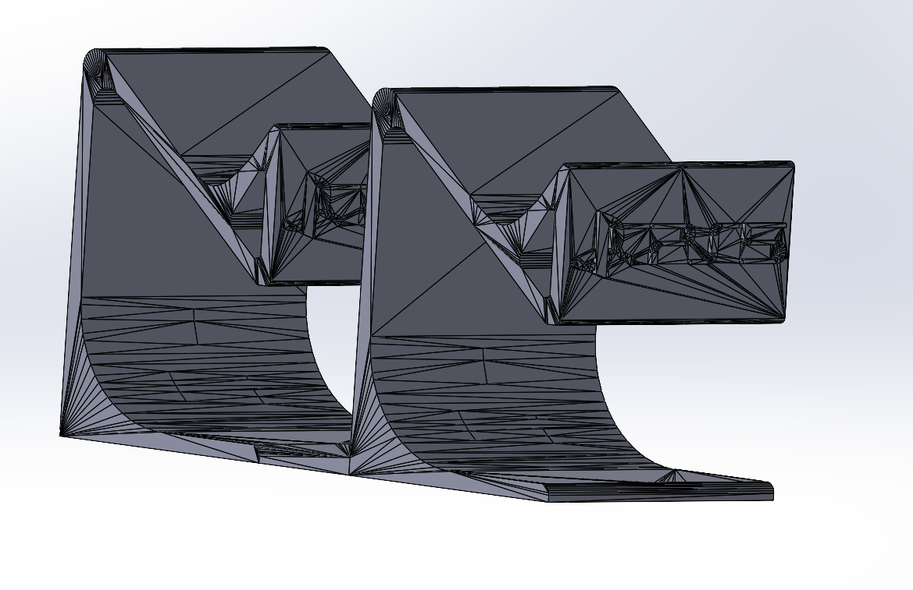Er að reyna að finna út málsetningarnar á standinum í Solidworks
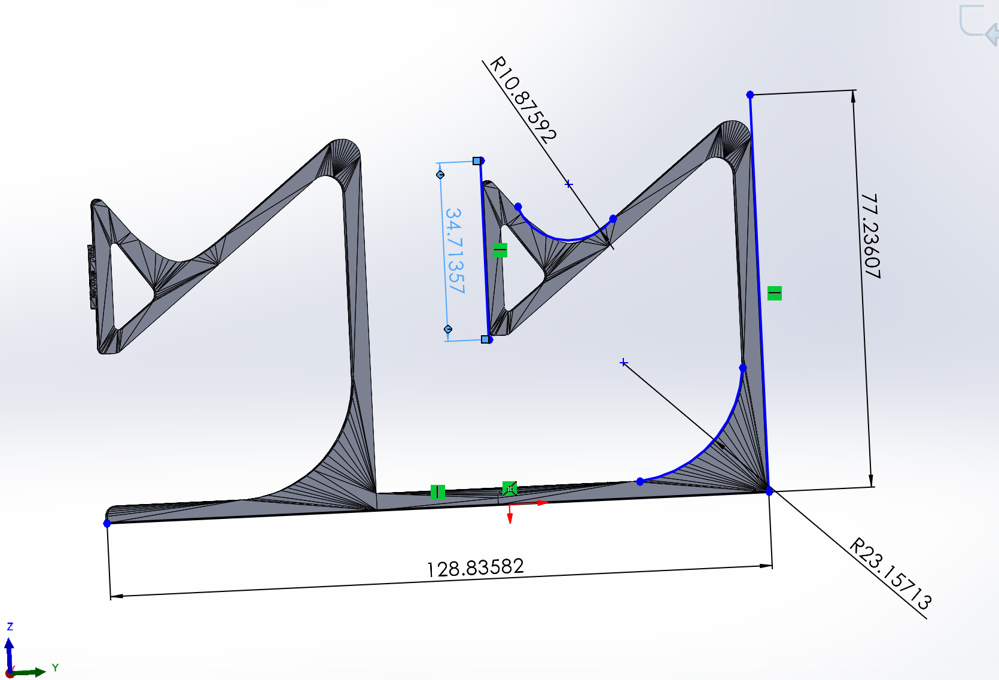Teiknaði standinn upp á nýtt
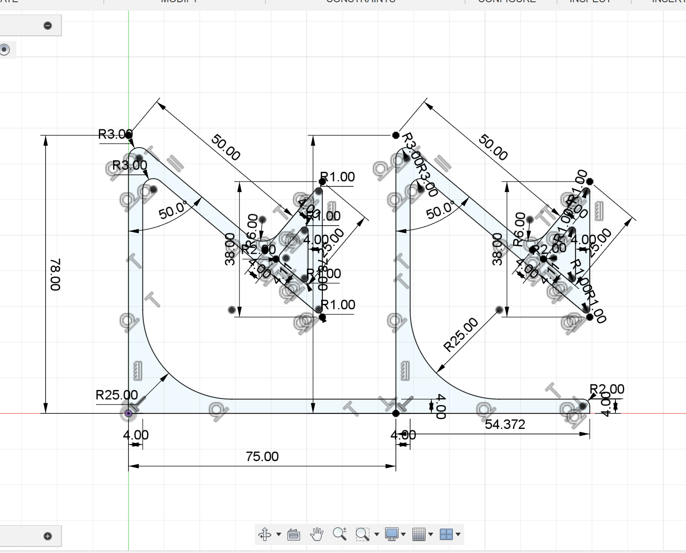Extrudaði teikninguna
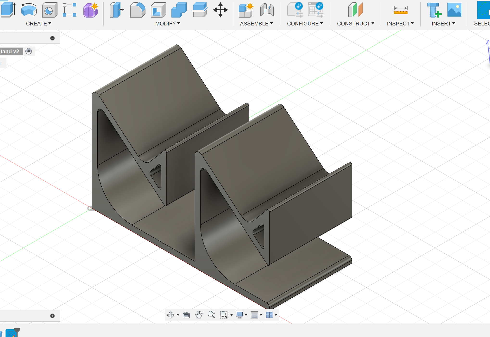Ég ákvað síðan að skrifa nafnið mitt á standinn sem reyndist vera snúnari en mig bjóst við. Það var ekkert mál að teikna stafina A, Y, U og H en það sem ég var í veseni við var að teikna stafinn S. Ég reyndi fyrst að teikna S með hringjum en ég fílaði ekki hvernig það leit út. Hér fyrir neðan er hægt að sjá fyrstu tilraunina mína við teikningu á stafnum S.
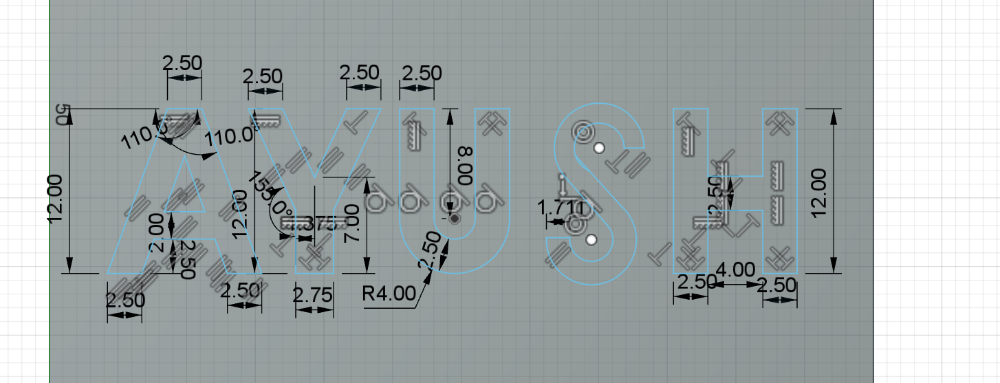Í staðinn fyrir að nota hringi þá prófaði ég að nota Splines sem gefur manni kleift að teikna flóknari ferla. Það var aðeins erfiðara að nota splines heldur en hringi en ég náði í endanum að finna út úr hvernig maður fer að því að nota tólið. Hér fyrir neðan er hægt að sjá loka teikninguna á S.
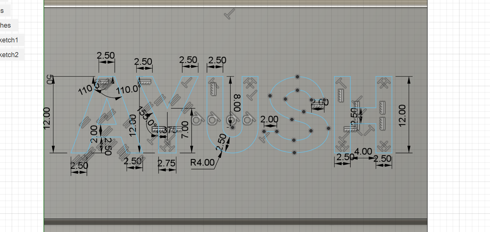Þá er módelið tilbúið til 3D prentunar. Síðan hlöðum við skjalinu í PrusaSlicer forritinu og gerum það klárt til prentunar.
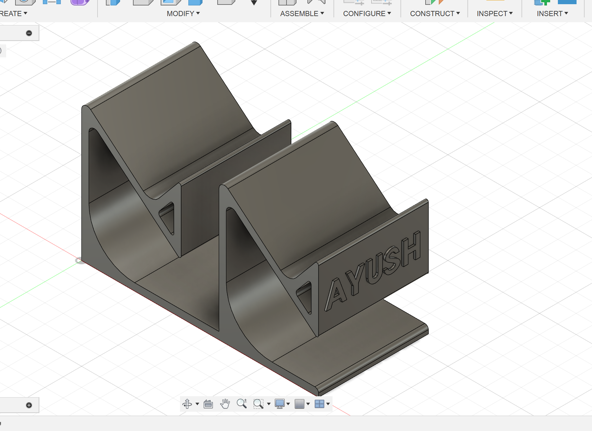Hér fyrir neðan er standurinn í PrusaSlicer forritinu.
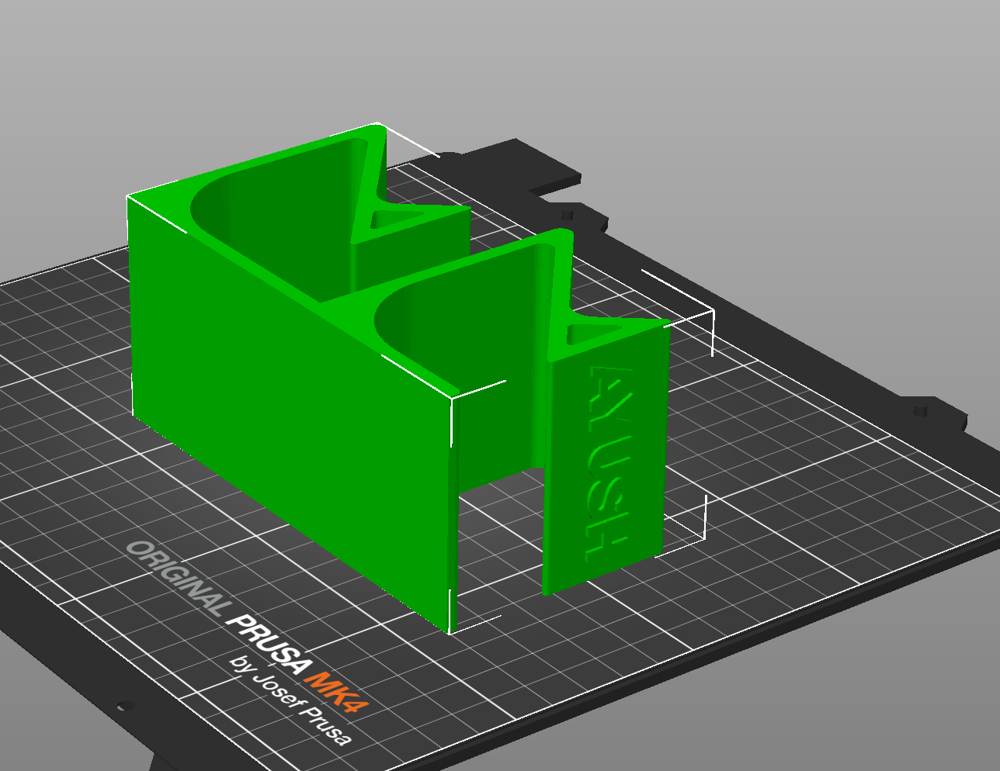Hér er 3D prentarinn að byrja að prenta standinn.
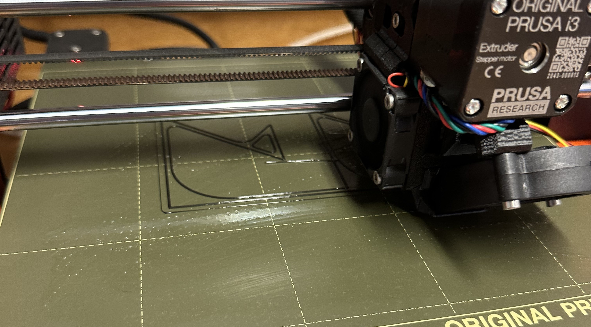Þá er 3D prentunar hluti verkefnisins í rauninni búið. Yfir höfuð þá er ég mjög sáttur með hvernig standurinn kom út. Ég var pínu áhyggjufullur þegar prentarinn byrjaði að prenta vegna þess að mér fannst bak og háls partarnir vera of þunnir og mundi í endanum brotna ef eitthvað álag mundi vera sett á hann. En sem betur fer kom þetta mjög vel út og ég var svolítið hissa hversu sterkt þetta plast efni var.
Hér fyrir neðan eru myndir af PS5 standinum eftir prentun og í notkun.
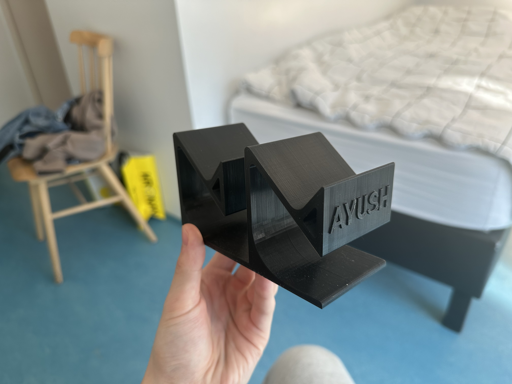 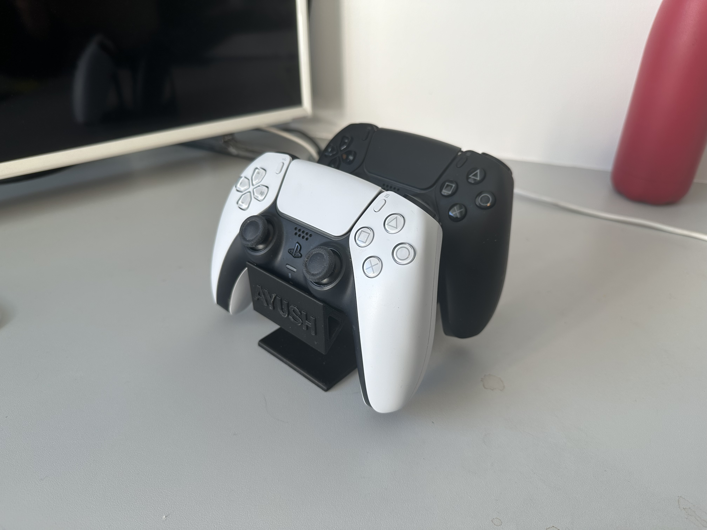Hönnunar reglur 3D prentarans
Ég ákvað að finna hönnunar reglurnar fyrir Prusa MK 3 prentaranum og þau eru eftir farandi:
Breiddin á hlutnum sem við prentum má ekki vera meiri en 25 cm.

Lengdin á hlutnum sem við prentum má ekki vera meiri en 21 cm.

Hæðinn á hlutnum sem við prentum má ekki vera meiri en 21 cm.

3D skönnuninn
Fyrir 3D skönnunina notaði ég app sem heitir Polycam og ákvað síðan að skanna stiga sem er í VR3. Ég tók sirka 50 myndir á meðan ég var að fara í kringum stigann sem ég hélt væri meira en nóg en það var greinilega ekki rétt. Eins og sést hér fyrir neðan þá er toppurinn á stiganum á 3D skönnuninni ekki á stiganum. Til þess að koma í veg fyrir þessu held ég að það væri best að taka fleiri nærmyndir á hlutnum sem verið er að skanna og bara fleiri myndir yfir höfuð.
Hér er stiginn sem var 3D skannaður
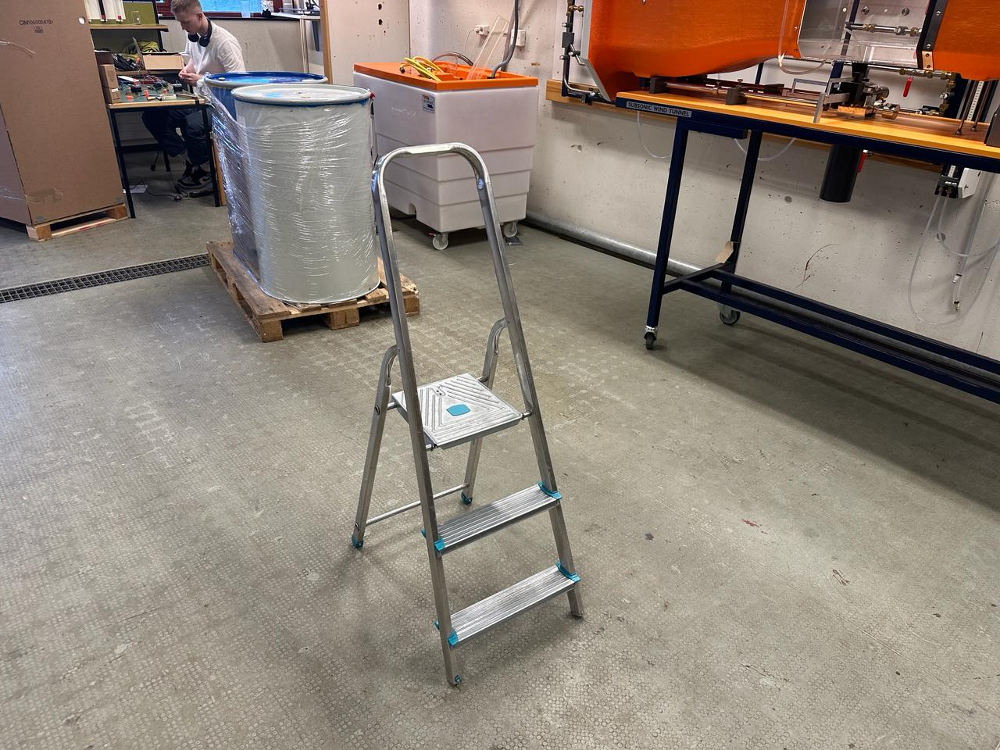Hér er 3D skannaða stiginn
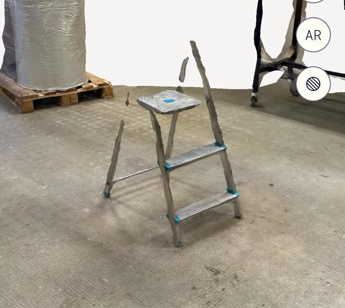